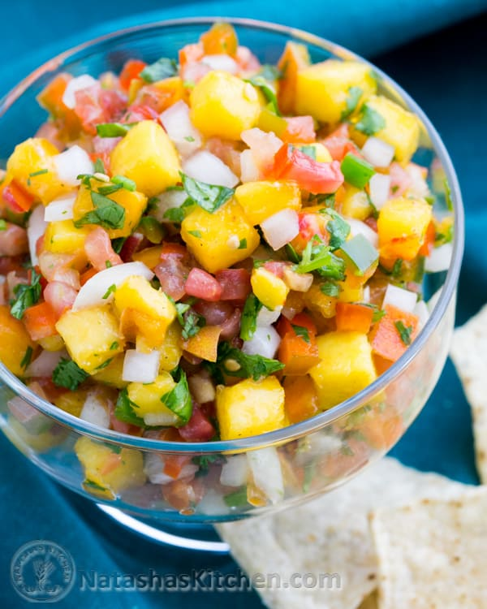

Peach Salsa with Tomato and Jalapenos

Description
This recipe makes a sweet and savory peach salsa!
Ingredients
- 2 large fresh peaches - peeled, pitted, and chopped
- 1 tomato, chopped
- 1 lime, juiced
- 1/2 jalapeno pepper, finely chopped, or more to taste
- 1 clove garlic, diced
- 1 tablespoon diced yellow onion
Steps
-
Mix together peaches, tomato, lime juice, jalapeno pepper, garlic, and
onion in a bowl.